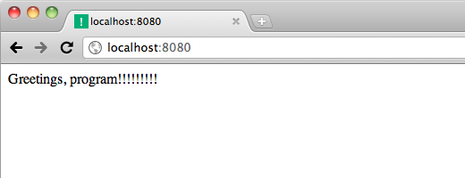

Simplates are Aspen’s main attraction. Here’s what a simplate looks like:
"""This is my simplate.
"""
import random
^L
n = random.choice(range(10))
extra_excitement = "!" * n
^L
Greetings, program!{{ extra_excitement }}
The ^L is an ASCII form feed
character. It’s also known as an ASCII page break, and so a
simplate is a file with three pages.
Assuming you’ve gone through the Quick Start, edit index.html with the above content, then refresh. BUT ...
If you copy and paste the above, you need to replace the ^Ls with actual
^Ls (you feel me?). If you don’t, you’ll get this in
your browser:
And you’ll get a template error and traceback in your console, ending with this:
NameError: global name 'extra_excitement' is not defined
That’s because the template page is looking for
extra_excitement, but this was never defined, because the second
Python page was never executed. Think about that sentence for a minute,
because once you understand it, you’ve grokked simplates.
Here’s how to type a ^L (hint:
it’s ctrl-L).
In general the current tool support for page breaks is weak. For example, you currently need to switch syntax highlighting manually:
| Vim | :set filetype={python,html,etc.} |
|---|
It would be great if editors could be configured to highlight pages differently within a file. For Aspen simplates, we would want the first two pages as Python, and the third according to the filename extension.
Once you’ve got the simplate right, refresh. Here’s what it should look like:
You’re off and running!
Give it a shot: Anything you define in the first two (Python) pages is available in the third (template) page.
Can you guess what the difference is between the first two Python pages? The first one is run once, on startup. It’s designed for imports and constants. The second is run once for each request.
The template page uses the template language from Tornado. It’s nice.
All three pages are cached in a compiled state. This cache is invalidated whenever the underlying file changes, so simplate changes are always immediately available. When you change Python libraries or configuration files, aspen can restart automatically. But even this extra second or so is a drag during development. When you change a simplate, the changes are always available immediately, without restarting the server.
Well, I like to think that simplates bring code and presentation as close together as possible without mixing them. There are no arbitrary Python blocks inside of the template page, à la PHP/ASP.
Simplates are more like MVC, but with controllers, views, and templates together in the same file instead of in separate files. Your models live in a Python library, use an ORM, etc. And URL routing is done via the filesystem. There’s all around less boilerplate.
Simplates make it easy to kick off development of an app or feature of an app. Simplates are, in fact, downright slippery. You won’t be able to stop innovating. You just open a single file and start writing Python, JavaScript, CSS, HTML, SQL—whatever. It takes zero wiring to get it on the network for the first time. And as apps/features mature, you will very naturally move code out of your single simplate into separate Python libraries, template files, JSON endpoint simplates, JavaScript libraries, CSS files, etc.
Don’t be scared! This isn’t PHP! It’s MVC with less crap.
My friend Steve came up with the original idea for simplates in the early aughts, when we were running a web design shop together. We were heavily into Zope and Plone at the time. This was in the Zope 2 days. The original idea was something like, “What if you could put a Script (Python) and a ZPT in THE SAME FILE!?” Steve has since switched careers to philosophy. I debuted simplates in Aspen 0.8, which came out in December of ’07. With Aspen 0.9 I’ve made simplates the main attraction.
{% end %}{kind=link}
{kind=link}